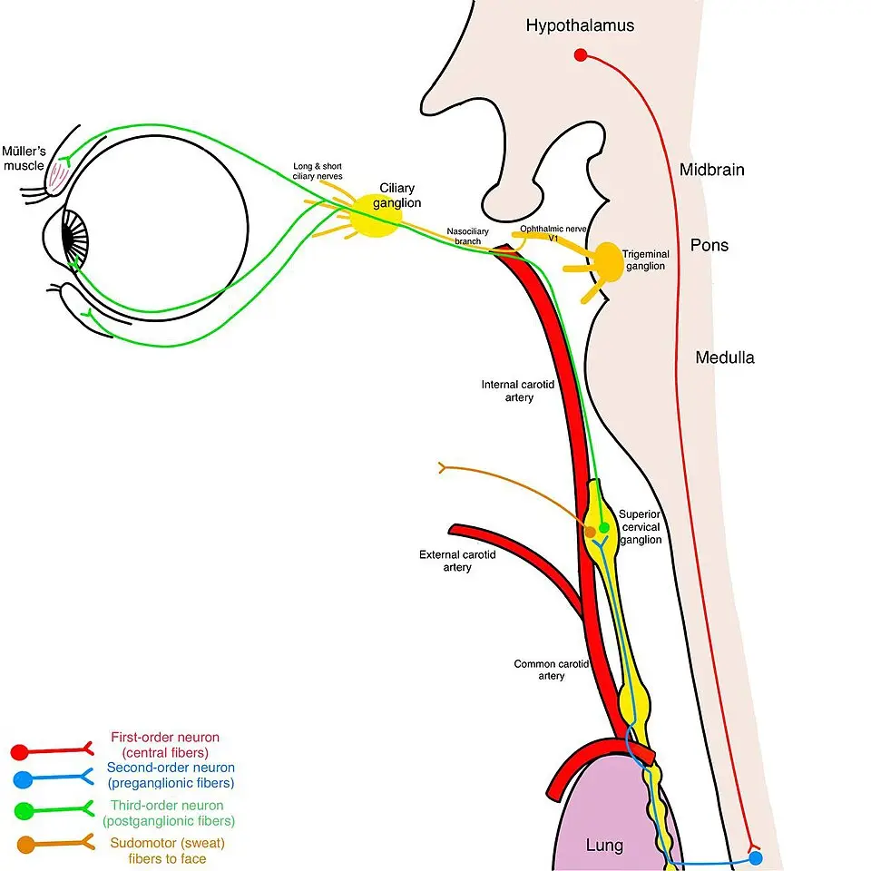

DX.9 — Syndrome de Horner par dissection de l'artère carotide interne
Le Horner par dissection carotidienne est un signe discret qui annonce un danger, car un AVC peut suivre dans les jours suivantsS1. Le médecin le reconnaît lorsqu'une petite pupille siège du côté d'un ptosis léger et qu'une douleur du cou ou de la tête est présenteS1S3. Il demande alors l'imagerie de la paroi artérielle le jour même, puis il prévient l'embolie par un antithrombotiqueS1S2.
1. Définition
L'European Stroke Organisation (ESO) définit en 2021 la dissection cervico-céphalique par un hématome situé dans la paroi d'une artère cervicale ou intracrânienneS2. La Revue Médicale Suisse de 2017 retient la même lésion : un hématome clive la paroi artérielle sur une étendue variable, avec ou sans déchirure de l'intimaS1. Lorsque cet hématome élargit la carotide interne, il fait souffrir les fibres sympathiques péricarotidiennes et produit le syndrome de Claude Bernard-HornerS1. Ce syndrome associe alors un ptosis et un myosis du côté de l'artère lésée, sans anhidrose de la face, d'où le nom de forme incomplèteS3.
2. Épidémiologie (Suisse, puis Europe)
Selon la Revue Médicale Suisse, l'incidence annuelle est de 2,5–3 dissections carotidiennes pour 100 000 habitantsS1. Dans la cohorte européenne CADISP, pilotée depuis Bâle, un Horner accompagne 191 des 496 dissections de la carotide interne, soit 38,5 %S5. La dissection explique 15 à 20 % des accidents vasculaires cérébraux (AVC) de l'adulte jeune, donc elle pèse sur une population activeS1. Trois fenêtres détaillent les chiffres, les personnes touchées et l'évolution spontanée.
Chiffres d'incidence et de fréquence
| Donnée | Valeur | Population, année | Source |
|---|---|---|---|
| Dissection carotidienne, incidence annuelle | 2,5–3 pour 100 000 habitants | Synthèse, Revue Médicale Suisse 2017 | S1 |
| Dissection vertébrale, incidence annuelle | 1–1,5 pour 100 000 habitants | Synthèse, Revue Médicale Suisse 2017 | S1 |
| Dissection extracrânienne, incidence annuelle | 2,6 à 3,0 pour 100 000 habitants | Recommandation ESO 2021 | S2 |
| AVC et accidents ischémiques transitoires (AIT) par dissection cervicale | 2,97 pour 100 000 par an ; carotide 1,21 ; vertébrale 1,87 | Registre de Dijon, 2006–2011, 27 patients sur 1368 événements | S7 |
| Part des dissections dans les AVC ischémiques | Environ 2 % de tous les AVC ; 15 à 20 % chez l'adulte jeune | Revue Médicale Suisse 2017 | S1 |
| Horner dans la dissection carotidienne | 38,5 % (191 sur 496) | CADISP, Europe, 2014 | S5 |
| Horner dans la dissection vertébrale | 13,4 % (36 sur 269) | CADISP, Europe, 2014 | S5 |
Le registre de Dijon ne compte que les dissections révélées par un AVC ou un AIT, donc il ignore les formes limitées aux signes locauxS7. La synthèse suisse rapporte au contraire une carotide interne atteinte environ 4 fois plus souvent que la vertébraleS1.
Âge, sexe, saison et terrain
- L'âge moyen est de 44 ans pour la dissection extracrânienne, contre 50 ans pour la forme intracrânienneS2.
- Le pic d'incidence se situe dans la cinquième décennie, sans prédominance d'un sexe ; les femmes sont touchées environ 5 ans plus tôtS1.
- La dissection est la deuxième cause d'AVC avant 45 ansS1.
- Les dissections surviennent plus souvent en automne et en hiver, et elles sont multiples dans 15 à 25 % des casS1.
- La dissection carotidienne concerne plutôt l'homme plus âgé, alors que la forme vertébrale touche davantage la femme jeuneS1.
- Le syndrome d'Ehlers-Danlos, la dysplasie fibromusculaire et les antécédents familiaux exposent à la récidive de dissectionS1.
Histoire naturelle et enjeux
- Un AIT ou un AVC complique la dissection chez environ deux tiers des patients, presque toujours dans la semaine qui suit les signes locauxS1.
- L'ischémie peut encore survenir jusqu'à 1 mois après le début, ce qui fixe la période de vigilanceS1.
- Dans l'étude STOP-CAD, près de 90 % des AVC secondaires surviennent durant les 30 premiers joursS4.
- Le Horner annonce un cours plus bénin : ces patients ont moins d'AVC, moins d'occlusions et un meilleur état à 3 mois (rapport de cotes ajusté 2,0)S5.
- L'artère se recanalise partiellement dans plus de 90 % des cas et complètement chez environ 60 % des patientsS1.
- Un anévrisme disséquant complique environ 33 % des dissectionsS1.
- La mortalité de la phase aiguë reste inférieure à 5 % dans les séries publiéesS1.
- Le pronostic fonctionnel est bon chez environ 75 % des patients, mais la vie professionnelle peut en souffrir durablementS1.
- Seuls 87,6 % des patients employés à plein temps reprennent leur travail après un suivi médian de 6,5 ansS4.
- Un état de stress post-traumatique touche 44 % des patients d'une série allemande de 62 personnesS4.
3. Physiopathologie
Une paroi artérielle fragile se clive sous l'effet d'un facteur déclenchant mineur, puis un hématome s'y installeS1. Cet hématome agit par deux voies, car il comprime les structures voisines et il favorise un thrombus qui embolise vers le cerveau ou la rétineS1. La compression explique le Horner et la douleur, alors que l'embolie explique l'AVC ; les antithrombotiques ne visent que la seconde voieS1. La fenêtre Base à connaître installe la voie sympathique, puis les fenêtres paroi artérielle, pupille et paupière et facteurs favorisants complètent la chaîne.
Base à connaître : la voie sympathique oculaire
La voie sympathique de l'œil compte trois neurones en série, et chaque étage possède ses lésions propresS3. Le raisonnement consiste donc à situer l'étage atteint avant de chercher la cause.
La voie sympathique oculaire est une chaîne de trois neurones. Le schéma est vu de profil : le tronc cérébral est à droite et l'œil à gauche.

Lisez d'abord seul ce cliché (voie sympathique oculaire à trois neurones) : cherchez vous-même le signe.
La copie annotée est celle qui numérote les repères décrits ci-dessous.
- Le premier neurone, en rouge, naît dans l'hypothalamus, puis il descend dans le tronc cérébral jusqu'à la moelle.
- Le deuxième neurone, en bleu, quitte la moelle, puis il passe sur l'apex du poumon et monte dans la chaîne cervicale.
- Le ganglion cervical supérieur porte la synapse avec le troisième neurone, en vert.
- Le troisième neurone monte dans la paroi de la carotide interne, où l'hématome de dissection le comprime souvent.
- Les fibres sudomotrices de la face, en orange, quittent la voie avec la carotide externe : la dissection de la carotide interne épargne donc la sudation.
- Le schéma ne montre pas les nerfs crâniens bas, qui longent aussi la carotide interne au cou.
Ce que l'image décide. Un Horner sans anhidrose, avec douleur du cou ou de la tête, localise la lésion à la carotide interne et impose l'imagerie de sa paroi le jour même.

| Neurone | Trajet | Lésions typiques | Signes qui localisent |
|---|---|---|---|
| Premier, central | Il naît dans l'hypothalamus, descend dans le tronc cérébral et se termine au centre cilio-spinal de la moelle, de C8 à T1 S3 | Infarctus latéro-bulbaire, lésion médullaire S3 | Ataxie du même côté, hypoalgésie croisée, hypohidrose de tout l'hémicorps S3 |
| Deuxième, préganglionnaire | Il quitte la moelle, passe sur l'apex pulmonaire et rejoint le ganglion cervical supérieur S3 | Tumeur de l'apex, traumatisme du plexus brachial, cathéter jugulaire, chirurgie du cou ou du thorax S3 | Douleur de l'épaule, déficit de la main, anhidrose de la face S3 |
| Troisième, postganglionnaire | Il monte dans la paroi de la carotide interne, traverse le sinus caverneux près du nerf VI, suit la branche ophtalmique du trijumeau puis les nerfs ciliaires longs S3 | Dissection carotidienne, lésion du sinus caverneux S3 | Douleur du cou ou de la tête ; sudation de la face conservée S3 |
Les fibres destinées aux glandes sudoripares de la face suivent la carotide externe, donc la dissection de la carotide interne les épargneS3.
Paroi artérielle et siège de l'hématome
- La dissection débute le plus souvent par une déchirure de l'intima, mais l'hémorragie peut aussi naître des vasa vasorum, dans la paroi elle-mêmeS1.
- Un hématome sous-intimal rétrécit la lumière, tandis qu'un hématome sous-adventitiel dilate l'artère et forme un anévrisme disséquantS1.
- Le segment extracrânien est vulnérable, car il est mobile et il touche des reliefs osseux comme les apophyses transverses ou l'apophyse styloïdeS1.
- La dissection carotidienne commence en général 2 cm en aval du bulbe et s'étend souvent jusqu'à la région sous-pétreuseS1.
- Les artères intracrâniennes sont dépourvues de lame élastique externe, donc leur dissection saigne plus volontiers dans l'espace sous-arachnoïdienS2.
- Plus de la moitié des patients montrent des anomalies du tissu conjonctif sur une biopsie de peau examinée en microscopie électroniqueS1.
- Au cou, la carotide interne longe les nerfs IX, X et XII, que l'artère élargie peut comprimer dans l'espace sous-parotidien postérieurS1.
Pupille et paupière : pourquoi les signes sont discrets
- Le muscle dilatateur de l'iris perd sa commande sympathique, donc le sphincter agit seul et la pupille devient plus petiteS3.
- L'anisocorie augmente à l'obscurité, puisque seule la pupille saine se dilate alors normalementS3.
- La pupille atteinte se dilate avec retard, et l'écart entre les deux yeux culmine après 4 à 5 secondes d'obscuritéS3.
- Le muscle de Müller est lisse et sympathique, et il n'assure qu'environ 2 mm de l'élévation de la paupière supérieureS3.
- Le ptosis reste donc discret, et il manque même chez 12 % des patients d'une sérieS3.
- Les rétracteurs lisses de la paupière inférieure se relâchent aussi, si bien que cette paupière remonte légèrementS3.
- La fente palpébrale rétrécie donne une fausse impression d'œil enfoncé, que les mesures ne confirment pasS3.
- Après dénervation, les récepteurs alpha-1 du dilatateur deviennent hypersensibles, ce qui fonde le test à l'apraclonidineS3.
Facteurs favorisants et chaîne des événements
L'origine est multifactorielle : une faiblesse constitutionnelle de la paroi rencontre un traumatisme mineur ou une infection récenteS1. La pression artérielle compte aussi, car une pression diastolique génétiquement plus élevée multiplie le risque par 2,40S4.
| Temps | Événement | Conséquence clinique |
|---|---|---|
| Amorce | Paroi fragile, hypertension, migraine, prédisposition héréditaire S1S4 | Aucun signe ; le terrain se cherche à l'anamnèse |
| Développement | Déchirure intimale ou saignement des vasa vasorum, puis hématome de paroi S1 | Douleur du cou, de l'hémicrâne ou de l'orbite S1 |
| Installation | Effet de masse sur le plexus sympathique et les nerfs crâniens bas ; thrombus dans la lumière S1 | Horner, paralysie des nerfs IX, X ou XII, puis embolie cérébrale ou rétinienne S1 |
| Maintien | Recanalisation, sténose résiduelle ou anévrisme disséquant S1 | Régression des signes locaux ; l'anévrisme garde en général un pronostic bénin S4 |
| Perturbation | Exploration qui la montre | Thérapeutique et mécanisme |
|---|---|---|
| Hématome dans la paroi carotidienne | IRM cervicale en séquence T1 avec suppression de graisse S1 | La paroi cicatrise seule ; l'imagerie de suivi règle la durée du traitement S1 |
| Thrombus sur la paroi lésée | Angiographie par résonance magnétique, angioscanner, écho-Doppler S1 | L'antiagrégant bloque les plaquettes, l'anticoagulant bloque la formation de fibrine S2 |
| Occlusion d'une artère cérébrale par un embole | Imagerie cérébrale et vasculaire en urgence S2 | L'altéplase lyse le caillot ; la thrombectomie le retire S2 |
| Compression du plexus sympathique | Pupilles à l'obscurité, test à l'apraclonidine S3 | Aucun traitement propre ; le signe suit la résorption de l'hématome S1 |
| Pression artérielle élevée | Mesure répétée de la pression | L'antihypertenseur réduit la contrainte sur la paroi ; les bêtabloquants seraient à préférer aux anticalciques S4 |
4. Démarche diagnostique
Devant un ptosis discret avec une petite pupille, le médecin écarte d'abord ce qui menace le cerveau, puis il reconnaît les causes bénignes. Un Horner récent et douloureux reste une dissection carotidienne jusqu'à la preuve du contraire, donc l'imagerie de la paroi se fait le jour mêmeS1. Un déficit focal associé ouvre la filière AVC, car la thrombolyse ne se donne que durant 4,5 heuresS2. La fenêtre raisonnement pas à pas décrit l'erreur habituelle du débutant.
| Hypothèse | Élément qui tranche | Piège | Conduite si positif |
|---|---|---|---|
| 🚩 AVC ou AIT par embolie de la dissection | Déficit hémisphérique ou cécité monoculaire transitoire ; imagerie cérébrale et vasculaire S1S2 | Un déficit bref déjà résolu garde la même valeur d'alarme | Filière AVC ; thrombolyse si les critères habituels sont remplis S2 |
| 🚩 Paralysie compressive du nerf III (DX.10) | La pupille est plus grande du côté du ptosis, et le ptosis est marqué S3 | Le débutant confond les deux ptosis sans regarder la pupille | Imagerie vasculaire intracrânienne immédiate (DX.10) |
| 🚩 Horner central par infarctus latéro-bulbaire (DX.3) | Ataxie du même côté et hypoalgésie croisée, présentes chacune dans 85 % des cas S3 | La sensibilité thermique et douloureuse n'est pas examinée | Filière AVC (DX.3) |
| 🚩 Horner préganglionnaire par tumeur de l'apex | Douleur de l'épaule du même côté, déficit de la main S3 | L'imagerie s'arrête au cou et manque le thorax | Imagerie du thorax et du plexus brachial S3 |
| Anisocorie physiologique avec ptosis aponévrotique (DX.1) | Anisocorie égale à la lumière et à l'obscurité ; elle concerne jusqu'à 20 % de la population S3 | Le patient est adressé en urgence à tort, ou rassuré sans test | Test à l'apraclonidine en cas de doute S3 |
| Horner iatrogène | Chirurgie du cou ou du thorax, cathéter jugulaire, anesthésie régionale S3 | Un geste sur la carotide peut aussi la disséquer | Imagerie si une douleur ou la chronologie ne concordent pas |
Raisonnement pas à pas et erreur du débutant
- Le médecin compare d'abord les pupilles : une pupille plus petite du côté du ptosis oriente vers le Horner, une pupille plus grande vers le nerf IIIS3.
- Il vérifie ensuite que la pupille se contracte bien à la lumière, car une pupille tonique ou bloquée par un collyre réagit malS3.
- Il cherche alors l'étage : signes du tronc cérébral, douleur de l'épaule, ou douleur du cou et de la têteS3.
- Il date enfin le début, puisque le risque d'embolie se concentre sur les premières semainesS1.
L'erreur classique consiste à rassurer parce que le ptosis mesure à peine 2 mm et que la douleur ressemble à une migraineS3. Or un quart des patients migraineux jugent la céphalée de dissection semblable à leurs crises habituellesS1. Le débutant l'évite en appliquant une règle simple : deux éléments parmi douleur du cou, douleur de l'hémicrâne et Horner partiel imposent l'imagerieS1.
Un exemple chiffré fixe la lecture du test pharmacologique. Sous apraclonidine à 0,5 %, la pupille dénervée se dilate en moyenne de 2,04 mm, alors que la pupille saine se resserre de 0,14 mmS3. Une anisocorie de départ d'un millimètre s'inverse donc, et cette inversion signe le HornerS3.
5. Anamnèse ciblée et drapeaux rouges
L'anamnèse date la douleur et cherche un épisode ischémique transitoire, car ces deux faits fixent le degré d'urgenceS1. Elle caractérise ensuite chaque symptôme dans les fenêtres douleur, symptômes ischémiques, autres signes locaux et terrain et médicaments.
La douleur : siège, début, caractère
| Question | Raison physiopathologique | Typique ou non, et pourquoi |
|---|---|---|
| Où avez-vous mal ? | L'hématome distend la paroi de l'artère S1 | Typique : région latérale du cou, hémicrâne et hémiface avec composante rétro-orbitaire, du côté du Horner S1 |
| Depuis quand, et comment la douleur a-t-elle commencé ? | L'ischémie suit les signes locaux de quelques minutes à quelques semaines S1 | Typique : douleur récente et inhabituelle ; un début en coup de tonnerre fait chercher une extension intracrânienne S1 |
| La douleur est-elle continue ou battante ? | La paroi reste distendue tant que l'hématome persiste S1 | Typique : douleur constante, parfois pulsatile S1 |
| Ressemble-t-elle à vos migraines ? | La migraine est un terrain de la dissection S4 | Trompeur : environ un quart des migraineux la jugent semblable à leurs crises S1 |
| La douleur siège-t-elle derrière la nuque ? | La dissection vertébrale donne une douleur postérieure et occipitale S1 | Atypique pour la carotide : elle oriente vers l'artère vertébrale S1 |
La triade complète, douleur du cou, douleur de l'hémicrâne et Horner partiel, ne se rencontre que dans un tiers des cas environS1.
Symptômes ischémiques : cerveau et rétine
| Question | Raison physiopathologique | Typique ou non, et pourquoi |
|---|---|---|
| Avez-vous perdu la vue d'un œil, même quelques minutes ? | Un embole parti de la carotide atteint l'artère de la rétine S1 | Typique : cécité monoculaire transitoire du côté de la dissection S1 |
| Avez-vous eu une faiblesse, un engourdissement, un trouble de la parole ? | L'embole occlut une artère de l'hémisphère S1 | Typique : des symptômes hémisphériques ou rétiniens existent dans 50 à 95 % des dissections carotidiennes S1 |
| À quelle heure étiez-vous encore sans symptôme ? | L'altéplase se donne au plus tard 4,5 heures après le dernier état sans symptôme S13 | Cette heure décide de la reperfusion |
| Avez-vous des vertiges, une instabilité, une vision double ? | Ces signes relèvent du territoire vertébro-basilaire S1 | Atypique pour la carotide : ils orientent vers une dissection vertébrale ou un Horner central S3 |
Autres signes locaux
| Question | Raison physiopathologique | Typique ou non, et pourquoi |
|---|---|---|
| Entendez-vous un bruit qui bat avec le pouls ? | L'artère rétrécie crée un flux turbulent près de l'oreille S1 | Possible : l'acouphène figure parmi les complications décrites S1 |
| Avalez-vous de travers ? Votre voix a-t-elle changé ? Votre langue vous gêne-t-elle ? | L'artère élargie comprime les nerfs IX, X et XII S1 | Possible : une paralysie de nerf crânien existe dans environ 12 % des dissections carotidiennes S1 |
| Transpirez-vous moins d'un côté du visage ? | Les fibres de la sudation faciale suivent la carotide externe S3 | Atypique : une anhidrose de la face oriente vers une lésion centrale ou préganglionnaire S3 |
| Depuis quand la paupière tombe-t-elle ? Avez-vous une photographie ancienne ? | Un Horner ancien et stable n'a pas la même urgence | Une photographie d'identité date le signe sans examen |
Déclencheurs, terrain et médicaments
| Question | Raison physiopathologique | Ce que la réponse change |
|---|---|---|
| Avez-vous subi un choc, un effort ou un mouvement forcé du cou ? | Un traumatisme mineur déclenche la dissection sur une paroi fragile S1 | La réponse renforce l'hypothèse ; son absence n'exclut rien |
| Avez-vous eu une infection récente ? | L'infection figure parmi les facteurs environnementaux S1 | La réponse renforce l'hypothèse |
| Avez-vous une hypertension, une migraine, un parent atteint, une maladie du tissu conjonctif ? | Ces terrains fragilisent la paroi ou augmentent la contrainte S1S4 | Le bilan d'artériopathie s'élargit et le risque de récidive augmente S1 |
| Êtes-vous enceinte, ou avez-vous accouché récemment ? | La grossesse modifie le choix des médicaments S10S12 | L'antivitamine K est contre-indiqué pendant la grossesse S12 ; un accouchement de moins de 10 jours contre-indique l'altéplase S13 |
| Avez-vous été opéré du cou ou du thorax, ou porté un cathéter jugulaire ? | Ces gestes lèsent le deuxième neurone S3 | Un Horner iatrogène devient probable si la chronologie concorde |
| Fumez-vous ? Avez-vous mal à l'épaule ou au bras ? | Une tumeur de l'apex envahit la chaîne sympathique S3 | L'imagerie s'étend au thorax S3 |
| Prenez-vous un anticoagulant, un antiagrégant ou un collyre ? | Un anticoagulant oral efficace contre-indique l'altéplase S13 | Le traitement de reperfusion et l'antithrombotique se choisissent autrement |
| Drapeau rouge | Signification | Action immédiate |
|---|---|---|
| 🚩 Déficit focal, trouble du langage ou cécité monoculaire, même transitoires | Embolie cérébrale ou rétinienne S1 | Appel de la filière AVC, imagerie cérébrale et vasculaire sans délai S2 |
| 🚩 Horner récent avec douleur du cou ou de la tête | Dissection carotidienne probable S1 | IRM cervicale avec suppression de graisse et angiographie le jour même S1 |
| 🚩 Céphalée en coup de tonnerre | Extension intracrânienne avec hémorragie sous-arachnoïdienne possible S1 | Imagerie cérébrale avant tout antithrombotique S2 |
| 🚩 Horner avec trouble de la déglutition, voix modifiée ou langue déviée | Compression des nerfs crâniens bas par l'artère élargie S1 | Imagerie cervicale le jour même ; test de déglutition avant toute prise orale |
| 🚩 Horner avec ataxie et hypoalgésie croisée | Infarctus latéro-bulbaire S3 | Filière AVC (DX.3) |
| 🚩 Ptosis avec pupille plus grande | Paralysie du nerf III S3 | Imagerie vasculaire intracrânienne immédiate (DX.10) |
6. Examen physique ciblé, région par région
L'examen compare les deux yeux à la lumière puis à l'obscurité, et il cherche ensuite les signes de voisinage et le déficit neurologiqueS3. Il ne remplace jamais l'imagerie, car aucun signe clinique ne montre l'hématome de paroiS1. Les fenêtres suivent l'ordre de l'examen : paupières, pupilles, motilité oculaire, face et sudation, vision, nerfs crâniens bas, examen neurologique et cou et pression artérielle.
Paupières
| Signe | Geste | Aspect |
|---|---|---|
| Paupières symétriques (normal) | Le patient regarde droit devant ; la lampe éclaire dans l'axe | Les deux bords supérieurs couvrent la cornée de la même hauteur |
| Ptosis discret | Le médecin compare la hauteur des deux fentes palpébrales | La paupière supérieure descend d'environ 2 mm au plus, car seul le muscle de Müller est atteint S3 |
| Ascension de la paupière inférieure | Le médecin regarde le bord inférieur par rapport au limbe | La paupière inférieure remonte légèrement et rétrécit la fente S3 |
| Fausse énophtalmie | Le médecin regarde le patient de profil | L'œil paraît enfoncé sans l'être réellement S3 |
Le ptosis est absent chez 12 % des patients, donc une paupière normale n'exclut pas le syndromeS3. Un ptosis complet oriente au contraire vers le releveur et le nerf III.
Pupilles
| Signe | Geste | Aspect |
|---|---|---|
| Pupilles égales et réactives (normal) | Mesure en pleine lumière, puis dans la pénombre | Une anisocorie physiologique, stable dans les deux éclairages, existe chez jusqu'à 20 % des sujets S3 |
| Myosis du côté du ptosis | Mesure des deux diamètres dans la pénombre | L'anisocorie est plus nette à l'obscurité qu'à la lumière S3 |
| Retard de dilatation | Le médecin éteint la lumière et observe les deux pupilles pendant 15 à 20 secondes, sous un éclairage rasant | L'écart culmine après 4 à 5 secondes, puis il diminue S3 |
| Réflexe photomoteur conservé | Éclairage de chaque œil | Les deux pupilles se contractent vivement ; une contraction lente oriente vers une pupille tonique, un collyre ou le nerf III S3 |
Le retard de dilatation n'est présent que dans 53 % des cas à la première mesure, donc son absence n'écarte pas le diagnosticS3.
Motilité oculaire
| Signe | Geste | Aspect |
|---|---|---|
| Motilité complète (normal) | Poursuite d'une cible dans les neuf positions du regard | Les deux yeux restent alignés, sans vision double |
| Limitation de l'abduction | Regard latéral de chaque côté | Une atteinte du nerf VI avec un Horner oriente vers le sinus caverneux ou le pont S3 |
| Atteinte du nerf III | Regard vers le haut, le bas et le dedans | Le ptosis est marqué et la pupille est large : ce n'est pas un Horner S3 |
La motilité est intacte dans le Horner carotidien isolé, donc une diplopie associée déplace la lésion vers le crâneS3.
Face et sudation
| Signe | Geste | Aspect |
|---|---|---|
| Peau du front lisse des deux côtés (normal) | Le dos d'une cuillère glisse sur le front | La cuillère glisse sans accrocher S3 |
| Anhidrose | Même geste, comparé des deux côtés | La cuillère accroche du côté sec ; ce signe désigne une lésion centrale ou préganglionnaire S3 |
| Sudation conservée avec Horner | Même geste | Ce tableau correspond à la forme incomplète de la carotide interne S3 |
Chez l'enfant, une hétérochromie de l'iris accompagne le Horner congénital, et un neuroblastome doit être cherché sans antécédent chirurgical ou obstétricalS3.
Vision et fond d'œil
| Signe | Geste | Aspect |
|---|---|---|
| Acuité et champ visuel normaux | Acuité de loin, œil par œil ; champ visuel par confrontation | Chaque œil lit et perçoit les quatre quadrants |
| Baisse de vision d'un œil | Acuité et fond d'œil | Elle traduit une ischémie de la rétine par embolie S1 |
| Déficit d'un hémichamp | Confrontation, œil par œil | Il traduit une lésion hémisphérique S1 |
Une cécité transitoire déjà terminée garde sa valeur, car elle prouve qu'un embole est déjà parti de l'artèreS1.
Nerfs crâniens bas
| Signe | Geste | Aspect |
|---|---|---|
| Langue médiane, voile symétrique (normal) | Le patient tire la langue, dit « a », puis avale une gorgée d'eau | La langue reste médiane, le voile s'élève des deux côtés, la voix est claire |
| Paralysie du nerf XII | Protraction de la langue | La langue dévie vers le côté de la dissection S1 |
| Paralysie des nerfs IX et X | Élévation du voile, écoute de la voix, déglutition | Le voile est asymétrique, la voix est rauque, la déglutition est difficile S1 |
Ces paralysies touchent environ 12 % des dissections carotidiennes, et elles imposent un test de déglutition avant toute prise oraleS1.
Examen neurologique
| Signe | Geste | Aspect |
|---|---|---|
| Examen normal | Force, langage, sensibilité, coordination, champ visuel | Le score de l'échelle NIHSS (National Institutes of Health Stroke Scale) vaut zéro |
| Déficit hémisphérique | Épreuve des bras tendus, dénomination, recherche d'une négligence | Hémiparésie, aphasie ou négligence du côté opposé à la carotide lésée S1 |
| Syndrome latéro-bulbaire | Sensibilité thermique et douloureuse, épreuve doigt-nez, marche | Ataxie du même côté et hypoalgésie croisée : le Horner est central S3 |
Le score NIHSS se chiffre dès l'arrivée, car la thrombectomie n'apporte un bénéfice qu'à partir de 6 points dans le registre CONCORDIAS4.
Cou, creux sus-claviculaire et pression artérielle
| Signe | Geste | Aspect |
|---|---|---|
| Cou indolore (normal) | Palpation douce des régions latérales du cou et des creux sus-claviculaires | Aucune douleur, aucune masse |
| Douleur latérale du cou | Palpation douce, sans massage ni manipulation | Elle concorde avec la dissection, sans la prouver S1 |
| Masse sus-claviculaire | Palpation du creux | Elle oriente vers une tumeur de l'apex S3 |
| Pression artérielle élevée | Mesure aux deux bras, répétée | Une pression supérieure à 185/110 mmHg se traite avant toute thrombolyse S13 |
L'hypertension est un facteur causal probable, donc sa mesure appartient à l'examen initial et au suiviS4.
7. Approche syndromique
Quatre syndromes résument la maladie, et chacun répond à un mécanisme distinctS1. Le syndrome local traduit la compression, tandis que le syndrome ischémique traduit l'embolie ; le niveau du Horner localise la lésion, et le syndrome hémorragique signale l'extension intracrânienneS1.
| Syndrome | Signes fonctionnels | Signes physiques |
|---|---|---|
| 7.1 Syndrome local carotidien | Douleur latérale du cou, de l'hémicrâne et de l'orbite ; acouphène ; gêne à la déglutition S1 | Horner incomplet ; paralysie des nerfs IX, X ou XII S1S3 |
| 7.2 Syndrome ischémique carotidien | Cécité monoculaire transitoire, faiblesse, trouble du langage S1 | Déficit hémisphérique, baisse d'acuité d'un œil S1 |
| 7.3 Syndrome de Horner selon l'étage | Paupière tombante, pupilles inégales, sudation modifiée S3 | Ptosis, myosis, retard de dilatation, anhidrose selon l'étage S3 |
| 7.4 Syndrome hémorragique | Céphalée brutale et intense S1 | Raideur de nuque, trouble de la vigilance |
7.1 Syndrome local carotidien
| Signe | Définition | Geste de recherche | Mécanisme |
|---|---|---|---|
| Douleur cervicale et céphalique | Douleur du côté de l'artère, au cou, à l'hémicrâne et derrière l'œil | Anamnèse ; palpation douce | Distension de la paroi par l'hématome S1 |
| Horner incomplet | Ptosis et myosis sans anhidrose de la face | Pupilles à l'obscurité ; hauteur des paupières | Souffrance des fibres sympathiques péricarotidiennes S1S3 |
| Paralysie des nerfs crâniens bas | Déficit de la langue, du voile ou de la voix | Protraction de la langue, voile, déglutition | Compression dans l'espace sous-parotidien postérieur S1 |
| Acouphène | Bruit perçu au rythme du pouls | Anamnèse | Flux modifié dans l'artère rétrécie S1 |
Ce syndrome peut rester isolé : dans une série de 146 patients, le Horner était le signe le plus fréquent, et il restait seul dans la moitié de ces casS3.
7.2 Syndrome ischémique carotidien
| Signe | Définition | Geste de recherche | Mécanisme |
|---|---|---|---|
| Cécité monoculaire transitoire | Perte de vision d'un seul œil, de quelques minutes | Anamnèse ; acuité ; fond d'œil | Embolie dans l'artère de la rétine S1 |
| Déficit hémisphérique | Hémiparésie, aphasie ou négligence | Score NIHSS | Embolie dans une artère cérébrale, plus rarement baisse du débit S1 |
| Accident ischémique transitoire | Déficit focal entièrement régressif | Anamnèse précise de l'heure et de la durée | Embole fragmenté ; les AIT sont plus fréquents dans la dissection carotidienne que vertébrale S1 |
L'ischémie suit les signes locaux de quelques heures ou de quelques jours, donc le syndrome local offre un délai pour agirS2.
7.3 Syndrome de Horner selon l'étage
| Étage | Signes fonctionnels | Signes physiques | Cause à chercher |
|---|---|---|---|
| Central | Vertige, instabilité, trouble de la déglutition | Horner avec ataxie et hypoalgésie croisée ; hypohidrose de l'hémicorps S3 | Infarctus latéro-bulbaire, dont 15 % relèvent d'une dissection artérielle dans une série de 130 patients S3 |
| Préganglionnaire | Douleur de l'épaule et du bras | Horner avec anhidrose de la face ; déficit de la main S3 | Tumeur de l'apex pulmonaire ; aucune cause n'est trouvée dans 28 % des cas S3 |
| Postganglionnaire | Douleur du cou, de la tête ou de l'orbite | Horner sans anhidrose de la face S3 | Dissection de la carotide interne ; lésion du sinus caverneux si le nerf VI est atteint S3 |
L'hydroxyamphétamine distingue en théorie les étages, mais l'imagerie guidée par la clinique reste la voie pratiqueS3.
7.4 Syndrome hémorragique
L'hémorragie sous-arachnoïdienne reste exceptionnelle dans la dissection extracrânienne, et elle suppose une extension à la portion intradurale de l'artèreS2. Elle révèle en revanche 50 à 60 % des dissections intracrâniennes dans les séries publiéesS2. Une céphalée brutale impose donc l'imagerie cérébrale avant tout antithrombotique, puisque le saignement en contre-indique l'usageS13.
8. Diagnostic positif et critères
Le diagnostic repose sur deux preuves distinctes : la clinique affirme le Horner, puis l'imagerie affirme la dissectionS2. Aucun score ne remplace cette double preuve, et la fenêtre critères en donne le détail.
Critères du Horner et critères ESO 2021 de la dissection extracrânienne
| Niveau | Critère | Ce qui suffit, ce qui ne suffit pas |
|---|---|---|
| Horner clinique | Ptosis discret, myosis du même côté, réflexe photomoteur conservé, anisocorie plus nette à l'obscurité S3 | Le tableau complet suffit pour demander l'imagerie ; l'absence de ptosis ou de retard de dilatation ne l'exclut pas S3 |
| Horner pharmacologique | Inversion de l'anisocorie sous apraclonidine S3 | Une réponse positive affirme le Horner ; une réponse négative dans les premiers jours ne l'écarte pas S3 |
| Horner pharmacologique, autre test | Anisocorie d'au moins 0,8 mm, 45 minutes après la cocaïne en collyre S3 | Le test est positif à ce seuil ; il ne localise pas l'étage S3 |
| Dissection radiologique (ESO 2021) | Hématome de paroi, anévrisme disséquant, longue sténose effilée, lambeau intimal ou double lumière S2 | Un seul de ces signes confirme le diagnostic S2 |
| Dissection radiologique, occlusion (ESO 2021) | Occlusion située plus de 2 cm au-dessus de la bifurcation, révélant après recanalisation un anévrisme ou une sténose effilée S2 | L'occlusion seule ne suffit pas tant que l'artère ne s'est pas rouverte S2 |
| Orientation clinique suisse | Deux éléments parmi douleur latérale du cou, douleur de l'hémicrâne et Horner partiel S1 | Ces éléments font évoquer fortement le diagnostic ; ils ne dispensent pas de l'imagerie S1 |
L'imagerie classe ensuite la lésion, qui est une sténose longue et irrégulière dans 48 % des cas, une occlusion dans 35 % et un anévrisme disséquant dans 17 %S1. Ce classement sert le pronostic, car une occlusion et une ischémie initiale concentrent les événements ultérieursS4.
9. Examens complémentaires
L'examen de référence est l'imagerie de la paroi artérielle, car le diagnostic exige de voir l'hématomeS1. La première intention associe donc l'IRM cervicale à l'imagerie du cerveau, et l'angioscanner la remplace dans la filière AVC. L'écho-Doppler sert d'alternative et de suivi, le test à l'apraclonidine confirme un Horner douteux, et le bilan d'artériopathie vient en seconde intention.
| Résultat | Signification | Conduite |
|---|---|---|
| Hématome de paroi en croissant sur la séquence T1 avec suppression de graisse | Dissection confirmée S1S2 | Antithrombotique après exclusion d'un saignement intracrânien S2 |
| Sténose longue et effilée, sans hématome visible | Dissection probable S2 | Compléter par la séquence de paroi ; traiter comme une dissection en attendant |
| Occlusion d'une grosse artère de la circulation antérieure avec déficit | AVC par embolie ou par extension S2 | Thrombolyse et thrombectomie selon les critères habituels S2 |
| Imagerie cervicale normale avec Horner confirmé | La lésion siège à un autre étage S3 | Étendre l'imagerie au crâne et au thorax selon les signes S3 |
| Hémorragie sous-arachnoïdienne | Extension intracrânienne de la dissection S1 | Aucun antithrombotique ; avis neurochirurgical et neuroradiologique S2 |
9.a et 9.b IRM cervicale et cérébrale avec angiographie
| Rubrique | Contenu |
|---|---|
| Indication | Tout Horner récent ou douloureux ; toute suspicion de dissection chez un adulte jeune avec AVC, AIT ou cécité transitoire S1 |
| Prescription exacte | IRM du cou et du crâne, séquences axiales T1 avec suppression de graisse, angiographie des troncs supra-aortiques, séquence de diffusion cérébrale S1 |
| Résultat normal | La paroi est fine, la lumière est régulière, aucun hypersignal ne borde l'artère |
| Résultat pathologique | L'hématome apparaît dans la paroi ; l'angiographie montre la sténose, l'occlusion ou l'anévrisme disséquant S1 |
| Apport cérébral | L'IRM montre l'infarctus, son étendue, son caractère hémorragique et une topographie évocatrice d'un mécanisme hémodynamique S1 |
| Pièges | Une angiographie seule peut manquer un hématome qui ne rétrécit pas la lumière ; la séquence de paroi doit donc être demandée par écrit S1 |
Dans l'essai TREAT-CAD, le diagnostic devait être vérifié par IRM pour permettre l'inclusion, ce qui confirme son rang de référenceS6.
9.b Angioscanner cervical et cérébral
| Rubrique | Contenu |
|---|---|
| Indication | Déficit neurologique aigu dans la filière AVC ; IRM indisponible ou impossible S1S2 |
| Prescription exacte | Scanner cérébral sans injection, puis angioscanner de la crosse de l'aorte au sommet du crâne |
| Résultat pathologique | Sténose effilée, occlusion, anévrisme disséquant, parfois hématome de paroi visible S1S2 |
| Apport en urgence | Il exclut l'hémorragie intracrânienne avant l'altéplase et cherche l'occlusion d'une grosse artère S13S2 |
| Pièges | L'hématome de paroi ne se voit que parfois sur l'angioscanner ; un examen douteux se complète par l'IRM S1 |
9.c Écho-Doppler cervical et transcrânien
| Rubrique | Contenu |
|---|---|
| Indication | Premier examen accessible et non invasif ; alternative pendant la grossesse, en cas d'insuffisance rénale sévère, d'allergie à l'iode ou d'IRM impossible ; suivi S1 |
| Prescription exacte | Écho-Doppler des artères carotides et vertébrales, complété par un Doppler transcrânien |
| Résultat pathologique | Sténose ou occlusion, hématome peu échogène dans la paroi, élargissement du calibre externe de l'artère S1 |
| Micro-embolies | Leur détection au Doppler transcrânien fait préférer l'anticoagulation dans certains centres S1 |
| Pièges | Les faux négatifs concernent l'anévrisme disséquant et la sténose haute de faible degré, sans retentissement sur le flux S1 |
Un écho-Doppler normal n'écarte donc pas la dissection lorsque la clinique est évocatrice, et l'IRM reste alors nécessaireS1.
9.d Test à l'apraclonidine
| Rubrique | Contenu |
|---|---|
| Indication | Anisocorie douteuse, lorsque la clinique n'affirme pas le Horner S3 |
| Principe | L'apraclonidine est un agoniste alpha-2 doté d'un faible effet alpha-1 ; elle dilate la seule pupille dénervée, devenue hypersensible S3 |
| Réalisation | Une goutte du collyre à 0,5 % dans chaque œil, hors AIPS, puis nouvelle mesure des pupilles dans le même éclairage S3 |
| Résultat positif | L'anisocorie s'inverse : la pupille atteinte se dilate en moyenne de 2,04 mm et la pupille saine se resserre de 0,14 mm S3 |
| Effet sur la paupière | La paupière atteinte s'élève en moyenne de 1,75 mm, contre 0,61 mm du côté sain ; ce signe n'est pas spécifique S3 |
| Pièges | L'hypersensibilité demande du temps : un test négatif précoce ne retarde jamais l'imagerie ; des tests positifs sont pourtant décrits dès 3 heures et 36 heures S3 |
| Précaution | Des nourrissons de moins de 6 mois sont devenus somnolents après le collyre S3 ; l'AIPS le contre-indique avant 12 ans S14 |
9.d Bilan de seconde intention
| Examen | But | Source |
|---|---|---|
| IRM des artères rénales | Chercher une artériopathie sous-jacente, comme la dysplasie fibromusculaire | S1 |
| Homocystéine, puis génotype 677TT de la MTHFR en cas d'élévation | Chercher un facteur métabolique de fragilité pariétale | S1 |
| Mesures répétées de la pression artérielle | Dépister l'hypertension, facteur causal probable | S1S4 |
| Échographie cardiaque | Chercher des anomalies cardiaques associées | S1 |
| Imagerie du thorax | Chercher une tumeur de l'apex si le Horner est préganglionnaire | S3 |
| Catécholamines urinaires et IRM du crâne, du cou et du thorax | Chercher un neuroblastome chez l'enfant sans chirurgie ni traumatisme obstétrical | S3 |
10. Arbre décisionnel
- ▸ Si un ptosis s'accompagne d'une pupille plus grande, alors le nerf III est en cause et l'imagerie intracrânienne est immédiate (DX.10).
- ▸ Si la pupille est plus petite et réagit à la lumière, alors le médecin retient un Horner et cherche un déficit focalS3.
- ↳ Si un déficit focal ou une cécité monoculaire existent, alors la filière AVC s'ouvre et l'heure du dernier état normal se note.
- ↳ Si le délai est inférieur à 4,5 heures et que l'imagerie exclut un saignement, alors l'altéplase se discute selon les critères habituelsS2.
- ↳ Si une grosse artère de la circulation antérieure est occluse, alors la thrombectomie est proposéeS2.
- ↳ Si le Horner est récent ou douloureux sans déficit, alors l'IRM cervicale de paroi se fait le jour mêmeS1.
- ↳ Si l'imagerie confirme la dissection, alors l'antithrombotique débute après exclusion d'une hémorragieS2.
- ↳ Si l'imagerie cervicale est normale, alors la recherche s'étend au tronc cérébral, au sinus caverneux et à l'apex pulmonaireS3.
- ↳ Si le Horner est ancien, stable et indolore, alors un avis ophtalmologique et un test à l'apraclonidine suffisent d'abordS3.
- ▸ Si une céphalée en coup de tonnerre est présente, alors l'imagerie cérébrale précède tout antithrombotiqueS2.
11. Prise en charge selon les recommandations suisses
11.A But
Le traitement vise à empêcher l'embolie cérébrale pendant la période à risque, c'est-à-dire surtout les 30 premiers joursS4. Il ne répare pas la paroi, qui se recanalise seule, et il ne traite pas directement le HornerS1.
11.B Moyens
La fenêtre Urgence — conduite chronologique ordonne les premières heures. L'ordre du traitement place la reperfusion avant la prévention, puis la prévention avant le bilan du terrain. L'ESO recommande en phase aiguë un anticoagulant ou un antiagrégant, sans préférence imposéeS2. La fenêtre choix de l'antithrombotique réunit les arguments suisses et les essais qui les fondent.
Urgence — conduite chronologique
Cette conduite est celle de l'adulte ; l'altéplase n'est autorisée dans l'AVC qu'à partir de 16 ansS13.
| Moment | Action | Délai maximal et piège |
|---|---|---|
| Premières minutes | Noter l'heure du dernier état sans symptôme ; chiffrer le score NIHSS ; mesurer la pression artérielle | L'heure inconnue fait perdre la thrombolyse |
| Première heure, avec déficit focal | Imagerie cérébrale et vasculaire ; altéplase à 0,9 mg/kg, au maximum 90 mg, dont 10 % en bolus puis le reste en 60 minutes S13 | Début au plus tard 4,5 heures après le dernier état normal, après exclusion d'une hémorragie S13 |
| Première heure, pression élevée | Traiter une pression supérieure à 185/110 mmHg avant la thrombolyse S13 | La pression se surveille ensuite pendant 24 heures S13 |
| Premières heures, occlusion d'une grosse artère | Thrombectomie mécanique S2 | Le bénéfice apparaît à partir d'un score NIHSS de 6 dans le registre CONCORDIA S4 |
| Jour même, sans déficit | IRM cervicale de paroi ; antithrombotique dès la confirmation et l'exclusion d'un saignement S1S2 | Attendre le lendemain expose à l'embolie, concentrée sur les premiers jours S4 |
| 24 premières heures après altéplase | Ni héparine intraveineuse ni antiagrégant S13 | Le risque hémorragique augmente si cette règle n'est pas respectée S13 |
| Premiers jours | Surveillance en unité cérébrovasculaire ; test de déglutition si les nerfs crâniens bas sont atteints | Prévoir l'aggravation : tout nouveau déficit impose une imagerie immédiate |
| Premières semaines | Antithrombotique, contrôle de la pression, consignes d'alerte écrites | Près de 90 % des AVC secondaires surviennent en 30 jours S4 |
Le transfert vers un centre doté de neuroradiologie interventionnelle se décide dès qu'une grosse artère est occluse ou que le déficit fluctueS2. La dissection ne contre-indique pas la thrombolyse, et l'altéplase ne doit pas être refusée pour ce seul motifS4.
Antiagrégant ou anticoagulant : les arguments
| Situation | Option préférée | Source |
|---|---|---|
| Symptômes locaux seuls, dont le Horner isolé | Antiagrégant | S1 |
| Infarctus étendu | Antiagrégant, car l'anticoagulant exposerait à la transformation hémorragique | S1 |
| Extension intracrânienne de la dissection | Antiagrégant, par crainte d'une hémorragie sous-arachnoïdienne | S1 |
| Sténose sévère, occlusion, thrombus visible dans la lumière | Anticoagulant dans certains centres | S1 |
| Lésions ischémiques multiples du même territoire, micro-embolies au Doppler | Anticoagulant dans certains centres | S1 |
| AIT ou AVC mineur | Double antiagrégation par aspirine et clopidogrel durant quelques semaines, selon la majorité des experts | S2 |
| Anticoagulation retenue | Un anticoagulant oral direct peut remplacer l'antivitamine K, selon la majorité des experts | S2 |
- L'essai TREAT-CAD, mené dans dix centres de Suisse, d'Allemagne et du Danemark, a comparé l'aspirine à une antivitamine K pendant 90 joursS6.
- Le critère principal est survenu chez 23 % des patients sous aspirine et 15 % sous antivitamine K, donc la non-infériorité de l'aspirine n'est pas démontréeS6.
- Sept AVC ischémiques sont survenus sous aspirine et aucun sous antivitamine K, pour une hémorragie extracrânienne majeure sous antivitamine KS6.
- L'essai britannique CADISS avait inclus 250 participants traités pendant 3 mois, sans montrer de différence entre les deux stratégiesS8S1.
- Selon la méta-analyse des trois grandes études, un AVC est évité pour 50 patients anticoagulés et une hémorragie majeure est provoquée pour 135S4.
- Dans TREAT-CAD, 97 % des événements ont touché des patients entrés avec une ischémie cérébrale, ce qui place le Horner isolé dans le groupe à bas risqueS4.
| Molécule et spécialité | Dose, voie, durée | Contre-indication majeure | Fiche |
|---|---|---|---|
| Acide acétylsalicylique, Aspirine® Cardio (n° 51795) | L'AIPS donne 300 mg 1 fois par jour, par voie orale, après un AITS10 ; l'essai TREAT-CAD a utilisé la même dose quotidienne pendant 90 jours S6 | Diathèse hémorragique, ulcère actif, troisième trimestre de la grossesse S10 | fiche |
| Clopidogrel, Plavix® (n° 54509) | 75 mg en une prise quotidienne, par voie oraleS11 ; association à l'aspirine limitée à quelques semaines S2 | Lésion susceptible de saigner, AVC hémorragique aigu, insuffisance hépatique sévère S11 | fiche |
| Phenprocoumone, Marcoumar® (n° 19395) | Dose orale adaptée pour un rapport international normalisé (INR) de 2,0 à 3,0 S12 ; 90 jours dans TREAT-CAD S6 | Grossesse, diathèse hémorragique, hémorragie cérébro-vasculaire S12 | fiche |
| Altéplase, Actilyse® (n° 48313) | 0,9 mg/kg, au maximum 90 mg, par voie intraveineuse en 60 minutes, dès 16 ansS13 | Hémorragie intracrânienne, anticoagulation orale efficace, accouchement de moins de 10 jours S13 | fiche |
| Paracétamol, Dafalgan® (n° 47503) | 500 à 1000 mg par prise au-delà de 40 kg et de 12 ans, au maximum 4000 mg par jourS15 | Atteinte hépatique grave, hépatite aiguë S15 | fiche |
| Apraclonidine, Iopidine® 0,5 % (n° 52813) | Une goutte par œil pour le test diagnostique, usage hors AIPS S3 | Enfant de moins de 12 ans, maladie cardiovasculaire sévère non contrôlée S14 | fiche |
Acide acétylsalicylique — Aspirine® Cardio 100 et 300 (n° 51795)S10
| Indication | L'AIPS retient la prophylaxie des accidents cérébro-vasculaires après des accidents ischémiques transitoires ; la dissection n'y figure pas en propre S10 |
|---|---|
| Dose AIPS | Après un AIT, l'AIPS prévoit 100 mg 3 fois par jour ou 300 mg 1 fois par jourS10 ; le comprimé gastro-résistant s'avale entier, au moins une demi-heure avant le repas S10 |
| Âge | L'AIPS exclut les enfants et les adolescents de moins de 18 ans, faute de données S10 |
| Contre-indications | Hypersensibilité aux salicylates, diathèse hémorragique, ulcère gastro-duodénal actif, insuffisance rénale sévère, insuffisance cardiaque sévère, atteinte hépatique sévère S10 |
| Fiche complète | La leçon DX.3 recopie la grossesse, l'allaitement et les autres rubriques de l'AIPS. |
Clopidogrel — Plavix® (n° 54509)S11
| Indication | L'AIPS retient chez l'adulte la prévention des accidents ischémiques après un AVC récent, de 7 jours à environ 6 mois S11 |
|---|---|
| Dose AIPS | Un comprimé à 75 mg en une prise quotidienne, pendant ou en dehors du repasS11 |
| Contre-indications | Hypersensibilité, lésion organique susceptible de saigner comme un ulcère actif ou un AVC hémorragique aigu, insuffisance hépatique sévère, diathèse hémorragique S11 |
| Oubli | Avant 12 heures de retard, la dose se prend aussitôt ; au-delà, la dose suivante se prend à l'heure habituelle, sans doubler S11 |
| Fiche complète | La leçon DX.3 recopie la grossesse, l'allaitement et les autres rubriques de l'AIPS. |
Phenprocoumone — Marcoumar® (n° 19395)S12
| Indication | L'AIPS retient la prévention des thromboses, les thromboses, les embolies et l'infarctus du myocarde S12 |
|---|---|
| Mécanisme | La phenprocoumone est un dérivé coumarinique, antagoniste de la vitamine K S12 |
| Dose AIPS | Le premier jour, 4,5 à 9 mg ; le deuxième jour, 6 mg ; ensuite la dose suit l'INR, contrôlé dès le troisième ou le quatrième jourS12 |
| Cible | L'AIPS fixe un INR de 2,0 à 3,0 pour le traitement des AIT S12 ; l'essai TREAT-CAD visait la même cible S6 |
| Contre-indications | Hypersensibilité, grossesse, diathèse hémorragique modérée à sévère, lésion hépatique grave, ulcère gastro-intestinal, hémorragie manifeste, hémorragie cérébro-vasculaire S12 |
| Grossesse | L'AIPS la contre-indique ; une contraception efficace couvre le traitement et les trois mois qui suivent la dernière dose S12 |
| Allaitement | Le principe actif passe dans le lait à des concentrations très faibles ; l'AIPS recommande par précaution une prophylaxie chez le nourrisson S12 |
Altéplase — Actilyse® (n° 48313)S13
| Indication | L'AIPS retient le traitement thrombolytique de l'AVC ischémique aigu, après exclusion d'une hémorragie intracrânienne S13 |
|---|---|
| Dose AIPS | 0,9 mg par kilogramme, au maximum 90 mg, dont 10 % en bolus intraveineux puis le reste en perfusion de 60 minutesS13 |
| Âge et délai | Adultes et adolescents dès 16 ans ; début au plus tard 4,5 heures après le dernier état sans symptôme S13 |
| Contre-indications | Hémorragie intracrânienne connue ou suspectée, anticoagulant oral efficace, traumatisme crânien ou chirurgie intracrânienne récents, hypertension sévère non contrôlée, accouchement de moins de 10 jours S13 |
| Surveillance | La pression artérielle se surveille 24 heures ; héparine intraveineuse et antiagrégant s'évitent durant ce délai S13 |
| Fiche complète | La leçon DX.3 recopie la grossesse, l'allaitement et les autres rubriques de l'AIPS. |
Paracétamol — Dafalgan® (n° 47503)S15
| Indication | L'AIPS retient les douleurs d'intensité faible à modérée, dont les maux de tête S15 |
|---|---|
| Place | Il soulage la douleur de la dissection sans modifier l'agrégation plaquettaire |
| Dose AIPS | Au-delà de 40 kg et de 12 ans, 500 à 1000 mg par prise, avec un intervalle de 4 à 8 heures et un maximum de 4000 mg par jourS15 |
| Insuffisance rénale | L'AIPS limite la dose à 3000 mg par jour pour une clairance de 10 à 50 ml/min et à 2000 mg par jour en dessous de 10 ml/minS15 |
| Contre-indications | Hypersensibilité, troubles hépatiques graves, hépatite aiguë, maladie hépatique décompensée S15 |
| Grossesse | L'AIPS l'admet en cas de nécessité clinique, à la dose efficace la plus faible et pour la durée la plus courte S15 |
| Allaitement | Le paracétamol passe dans le lait maternel, à une concentration proche de celle du plasma S15 |
Apraclonidine — Iopidine® 0,5 % (n° 52813)S14
| Indication | L'AIPS ne retient que le traitement d'appoint du glaucome ; le test du Horner est un usage hors AIPS S14S3 |
|---|---|
| Mécanisme | L'apraclonidine stimule les récepteurs alpha-2 et, faiblement, les récepteurs alpha-1 du dilatateur de l'iris S3 |
| Dose AIPS | Dans le glaucome, une goutte trois fois par jour dans l'œil atteint, durant trois mois au maximum S14 |
| Dose du test | Une goutte unique dans chaque œil, d'après la revue de neuro-ophtalmologie S3 |
| Contre-indications | Hypersensibilité à l'apraclonidine ou à la clonidine, inhibiteurs de la monoamine-oxydase, sympathomimétiques, antidépresseurs tricycliques, enfant de moins de 12 ans, maladie cardiovasculaire sévère non contrôlée S14 |
| Grossesse | L'AIPS ne l'admet qu'en cas de nécessité absolue, faute d'étude contrôlée S14 |
| Allaitement | Le passage dans le lait est inconnu et un risque pour le nourrisson ne peut être exclu S14 |
Mesures non pharmacologiques. Le patient reçoit des consignes écrites : tout déficit, tout trouble visuel ou toute céphalée brutale impose un appel immédiat. Le traitement endovasculaire se réserve à l'aggravation clinique malgré un traitement médical optimalS1. L'ESO déconseille en effet le traitement endovasculaire ou chirurgical systématique d'une sténose résiduelle ou d'un anévrisme disséquantS2.
Situations spéciales. Pendant la grossesse, l'antivitamine K est contre-indiquée et l'aspirine ne s'emploie qu'en cas de nécessité absolue, donc la décision revient au centre spécialiséS12S10. Chez le patient en insuffisance rénale sévère, l'aspirine est contre-indiquée lorsque la clairance passe sous 30 ml/minS10. Chez l'enfant, le Horner fait d'abord chercher un neuroblastome, et les antithrombotiques relèvent du centre pédiatriqueS3. Chez le sujet âgé, le risque hémorragique pèse davantage dans le choix, puisque toutes les hémorragies graves des essais sont survenues sous anticoagulantS4.
Volet social. Le médecin anticipe la reprise du travail, car 87,6 % seulement des patients à plein temps la réussissent, et les femmes moins souvent que les hommesS4. Il dépiste aussi la détresse psychique, fréquente malgré une bonne récupération motriceS4.
11.C Surveillance
La surveillance porte sur la clinique, l'artère et le traitement. Un écho-Doppler ou une IRM de contrôle suit la recanalisation, et son résultat règle la durée du traitementS1. Sous antivitamine K, l'INR se contrôle dès le troisième ou le quatrième jour, puis régulièrementS12. L'arrêt se discute vers 3 mois, puisque TREAT-CAD n'a observé aucun événement ischémique entre 3 et 6 mois, mais quatre hémorragiesS4. La pression artérielle se mesure à chaque visite, car l'hypertension expose à la récidive ischémiqueS1.
11.D Pronostic et critères de sortie
Le Horner isolé est de bon augure, avec un meilleur état fonctionnel à 3 mois que sans HornerS5. Une sténose se recanalise dans 46 % des cas, une occlusion dans 33 % et un anévrisme disséquant dans 12 %S1. La récidive ischémique touche 0,4 à 13,3 % des patients à un an, surtout en cas de dissections multiples ou d'hypertensionS1. La récidive de dissection reste rare et se concentre sur les deux premiers moisS1.
- Le patient peut sortir lorsque l'examen neurologique est stable depuis la mise sous antithrombotique.
- La sortie exige que l'imagerie cérébrale ait écarté un infarctus évolutif et un saignement.
- Le traitement antithrombotique est choisi, expliqué, et sa durée prévue est écrite.
- La pression artérielle est contrôlée et son suivi est organisé.
- Le patient connaît les signes d'alerte et il sait qui appeler.
- Le rendez-vous d'imagerie de contrôle et la consultation neurovasculaire sont fixés.
12. Prévention
Prévention primaire. Aucune preuve ne soutient le dépistage des personnes sans symptôme, même avec un parent atteint ou un sport de contactS4. Le contrôle de la pression artérielle reste la seule mesure fondée sur un lien causal probableS4. Ce point rejoint le terrain décrit au point 2.
Prévention secondaire. La Revue Médicale Suisse de 2017 retient un traitement antithrombotique pour prévenir l'événement ischémique, et l'ESO de 2021 laisse le choix de la classeS1S2. Le médecin traite l'hypertension et cherche une artériopathie sous-jacente, puisque ces terrains favorisent la récidiveS1. Les bêtabloquants seraient à préférer aux anticalciques d'après les données génétiquesS4.
Prévention tertiaire. La rééducation suit les séquelles d'un éventuel AVC, et le suivi psychologique répond au stress post-traumatique, retrouvé chez 44 % des patients d'une sérieS4. Le suivi par imagerie surveille l'anévrisme disséquant, présent chez 14,5 % des patients de CADISS à 3 mois, sans modifier le traitementS4.
13. Points clés
- Un Horner récent et douloureux est une dissection carotidienne jusqu'à la preuve du contraire, et l'imagerie de paroi se fait le jour mêmeS1.
- La forme carotidienne associe ptosis et myosis sans anhidrose, car les fibres de la sudation suivent la carotide externeS3.
- L'IRM avec suppression de graisse montre l'hématome de paroi et confirme le diagnosticS1.
- Le risque d'AVC se concentre sur les 30 premiers jours, donc l'antithrombotique débute sans attendreS4.
- L'ESO admet l'antiagrégant comme l'anticoagulant en phase aiguë, et la dissection ne contre-indique pas la thrombolyseS2.
- Une pupille plus grande du côté du ptosis est le signe d'une atteinte du nerf III, et non d'un HornerS3.
14. Pièges et questions fréquentes à l'examen fédéral suisse
| Question | Bonne réponse | Raison |
|---|---|---|
| Un homme de 44 ans a un ptosis discret, une petite pupille et une douleur du cou depuis deux jours : quel examen demander ? | Une IRM cervicale avec suppression de graisse et angiographie, le jour même. | Deux éléments de la triade suffisent à évoquer fortement la dissection (point 8) S1 |
| Le front transpire des deux côtés : cela écarte-t-il un Horner ? | Non. | La forme carotidienne épargne la sudation, portée par la carotide externe (point 3) S3 |
| Le ptosis est-il toujours présent dans le Horner ? | Non, il manque dans 12 % des cas. | Le muscle de Müller n'élève la paupière que d'environ 2 mm (point 6) S3 |
| La dissection contre-indique-t-elle l'altéplase en cas d'AVC ? | Non. | L'ESO suggère la thrombolyse dans les 4,5 heures si les critères habituels sont remplis (point 11) S2 |
| Quelle est la dose d'altéplase dans l'AVC, et à partir de quel âge ? | 0,9 mg/kg, au maximum 90 mg, dès 16 ansS13. | La dose de l'infarctus du myocarde ne s'applique pas à l'AVC (fiche altéplase) S13 |
| Faut-il préférer l'anticoagulant à l'antiagrégant ? | Aucune des deux classes n'est imposée. | L'ESO recommande l'une ou l'autre ; TREAT-CAD n'a pas montré la non-infériorité de l'aspirine (point 11) S2S6 |
| Un test à l'apraclonidine négatif au premier jour écarte-t-il le Horner ? | Non. | L'hypersensibilité de dénervation demande du temps ; l'imagerie ne s'en trouve pas retardée (point 9) S3 |
| Un Horner avec ataxie et hypoalgésie croisée relève-t-il de la carotide ? | Non, il est central. | Ces signes définissent le syndrome latéro-bulbaire, traité au DX.3 (point 7) S3 |
| Quand le risque d'AVC est-il le plus élevé après une dissection ? | Durant les 30 premiers jours. | Près de 90 % des AVC secondaires y surviennent (point 2) S4 |
| Une femme enceinte peut-elle recevoir une antivitamine K ? | Non. | L'AIPS de Marcoumar contre-indique la grossesse (fiche phenprocoumone) S12 |
Sources
- [S1] Sztajzel R (Hôpital de La Tour, Genève), Perren F, Michel P (Centre hospitalier universitaire vaudois, Lausanne). Dissections carotidiennes et vertébrales spontanées. Rev Med Suisse 2017;13(560):900-906. https://www.revmed.ch/revue-medicale-suisse/2017/revue-medicale-suisse-560/dissections-carotidiennes-et-vertebrales-spontanees — texte intégral consulté le 11.11.2026.
- [S2] Debette S, Mazighi M, Bijlenga P (Genève), et al. ESO guideline for the management of extracranial and intracranial artery dissection. Eur Stroke J 2021;6(3):XXXIX-LXXXVIII. https://pmc.ncbi.nlm.nih.gov/articles/PMC8564160/ — texte intégral consulté le 11.11.2026.
- [S3] Kanagalingam S, Miller NR. Horner syndrome: clinical perspectives. Eye Brain 2015;7:35-46. https://europepmc.org/article/PMC/PMC5398733 — texte intégral consulté le 11.11.2026.
- [S4] Kaufmann JE, Mayer-Suess L, Seiffge D, Knoflach M, Engelter ST, Traenka C (Hôpital universitaire de Bâle). Management of cervical artery dissection: new evidence and future directions. J Neurol 2025. https://europepmc.org/article/PMC/PMC12116624 — texte intégral consulté le 11.11.2026.
- [S5] Lyrer PA (Hôpital universitaire de Bâle), Brandt T, Metso TM, et al. ; groupe CADISP. Clinical import of Horner syndrome in internal carotid and vertebral artery dissection. Neurology 2014;82(18):1653-1659. https://doi.org/10.1212/WNL.0000000000000381 — résumé PubMed consulté le 11.11.2026.
- [S6] Engelter ST, Traenka C, Gensicke H, et al. (Bâle, Berne, Lausanne, Zurich, Saint-Gall, Aarau, Genève). Aspirin versus anticoagulation in cervical artery dissection (TREAT-CAD): an open-label, randomised, non-inferiority trial. Lancet Neurol 2021;20(5):341-350. https://doi.org/10.1016/S1474-4422(21)00044-2 — résumé PubMed consulté le 11.11.2026.
- [S7] Béjot Y, Daubail B, Debette S, Durier J, Giroud M. Incidence and outcome of cerebrovascular events related to cervical artery dissection: the Dijon Stroke Registry. Int J Stroke 2014;9(7):879-882. https://doi.org/10.1111/ijs.12154 — résumé PubMed consulté le 11.11.2026.
- [S8] CADISS trial investigators, Markus HS, Hayter E, et al. Antiplatelet treatment compared with anticoagulation treatment for cervical artery dissection (CADISS): a randomised trial. Lancet Neurol 2015;14(4):361-367. https://europepmc.org/article/MED/25684164 — résumé consulté le 11.11.2026.
- [S9] Commission interfacultés médicale suisse (CIMS/SMIFK). PROFILES 2023, liste des situations de départ (SSP), S1.1 « diplopia, ptosis, abnormal eye movements ». https://www.smifk-cims.ch/profiles-2023/ssps — consulté le 11.11.2026.
- [S10] Swissmedic, information professionnelle (AIPS) Aspirine® Cardio 100 et Aspirine® Cardio 300 (acide acétylsalicylique), n° 51795, mise à jour mars 2026. https://files.refdata.ch/simis-public-prod/MedicinalDocuments/5c0d9caab7df4b4bad5c584cf5bb5fc5-fr.html — consulté le 11.11.2026.
- [S11] Swissmedic, information professionnelle (AIPS) Plavix® (clopidogrel), n° 54509, mise à jour septembre 2022. https://files.refdata.ch/simis-public-prod/MedicinalDocuments/242233acc60a4b32a14b239b3e7f3c9f-fr.html — consulté le 11.11.2026.
- [S12] Swissmedic, information professionnelle (AIPS) Marcoumar® (phenprocoumone), n° 19395, mise à jour octobre 2020. https://files.refdata.ch/simis-public-prod/MedicinalDocuments/41915e928d6649a58ece4a8d4263dbf6-fr.html — consulté le 11.11.2026.
- [S13] Swissmedic, information professionnelle (AIPS) Actilyse® (altéplase), n° 48313, mise à jour juin 2025. https://files.refdata.ch/simis-public-prod/MedicinalDocuments/6aae41fea9094666bf83bbc10c8c61e8-fr.html — consulté le 11.11.2026.
- [S14] Swissmedic, information professionnelle (AIPS) Iopidine® 0,5 % (apraclonidine), n° 52813, mise à jour mai 2023. https://files.refdata.ch/simis-public-prod/MedicinalDocuments/719c49c72c134fbd9194d528789b017d-fr.html — consulté le 11.11.2026.
- [S15] Swissmedic, information professionnelle (AIPS) Dafalgan® (paracétamol), n° 47503, mise à jour juillet 2026. https://files.refdata.ch/simis-public-prod/MedicinalDocuments/783cc01c6fa7448399362d9df7d4be78-fr.html — consulté le 11.11.2026.